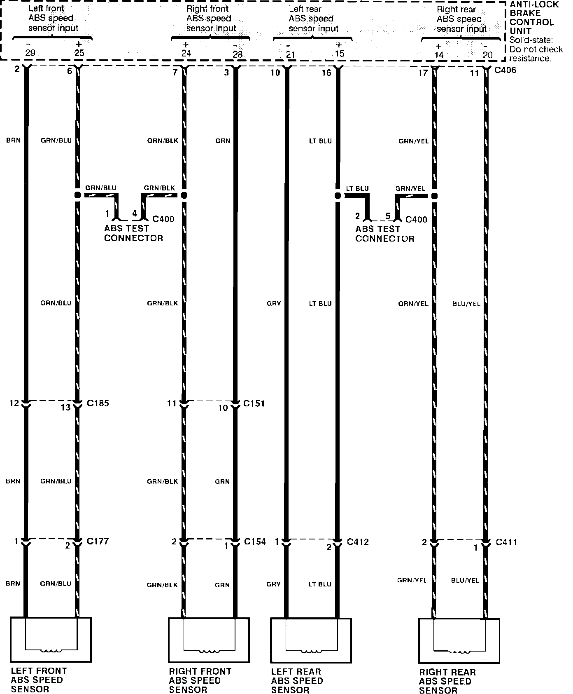
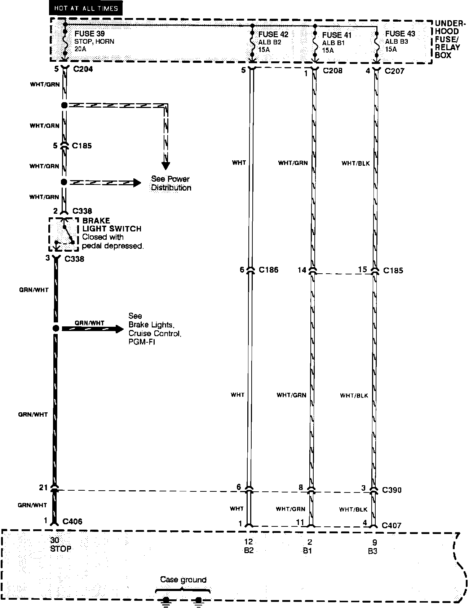
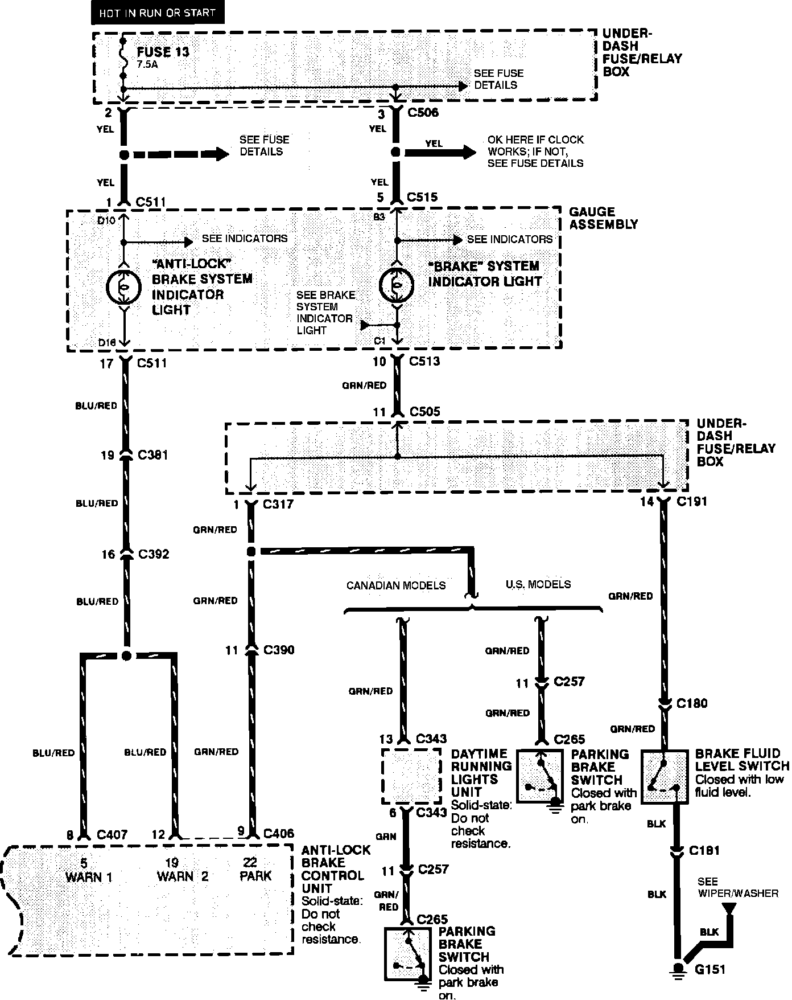
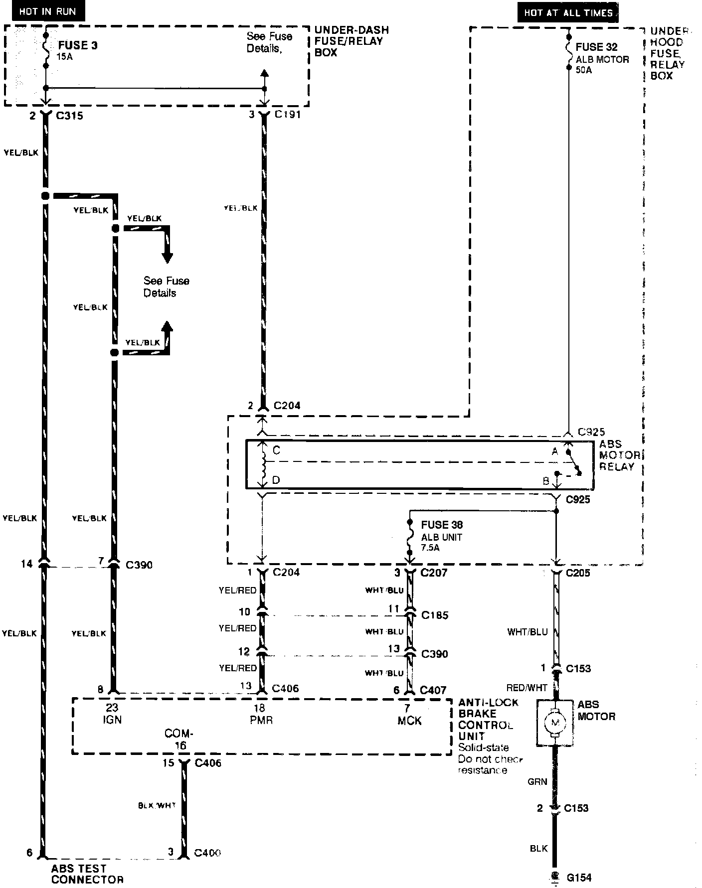
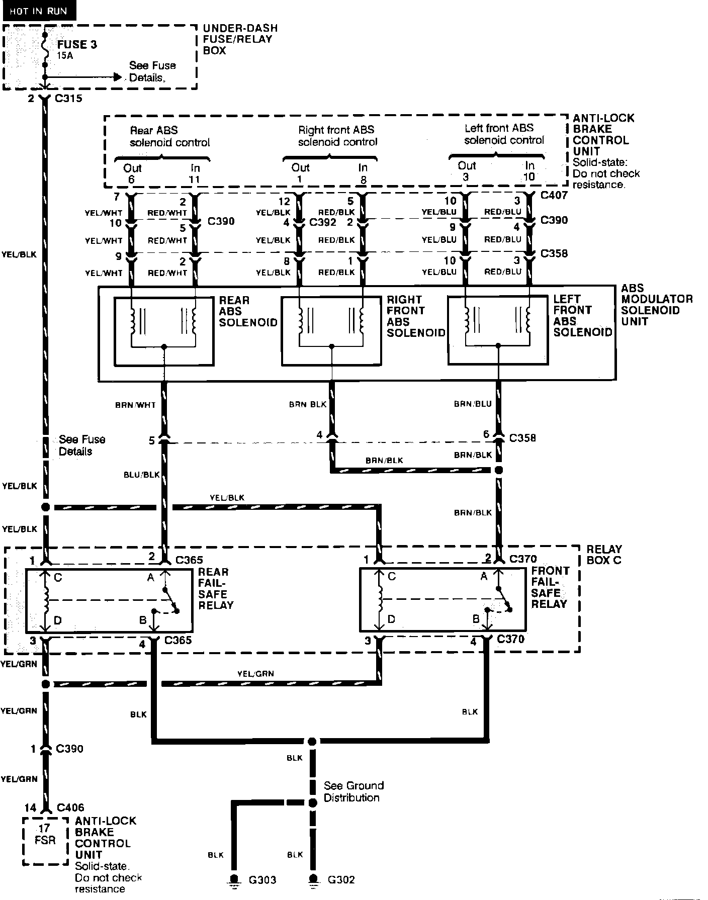
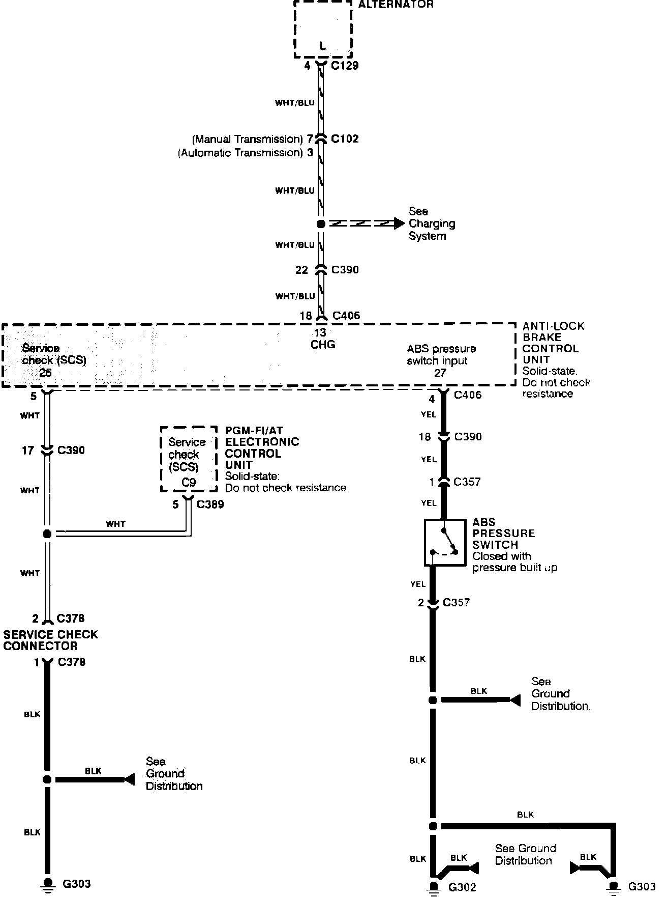

Wiring Diagrams
Speed Sensors:

Anti-lock Brake System: Power And Grounds:

Anti-lock Brake System: Indicator Control:

Anti-lock Brake System: ABS Motor:

Anti-lock Brake System: Solenoid Control And Fail Safe Relays:

Anti-lock Brake System: Pressure Switch:
